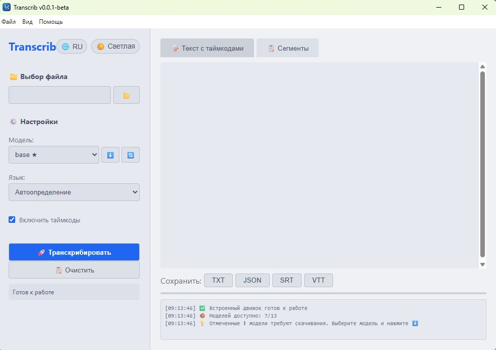
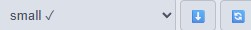

О программе
Transcrib — Electron-приложение для транскрибации аудио и видео в текст на основе Whisper (OpenAI) и whisper.cpp.
Выберите файл, укажите язык, нажмите «Транскрибировать» — и получите текст с тайм-кодами. Готовый результат можно сохранить в TXT, JSON, SRT или VTT.
Возможности
Встроенные модели
Модели tiny и base уже включены в дистрибутив — работают быстро и без интернета.
Дополнительные модели
Модели small, medium и large скачиваются по запросу для более качественного распознавания.
99+ языков
Поддержка множества языков, включая русский и английский.
4 формата экспорта
Сохраняйте результат в TXT, JSON, SRT и VTT (субтитры).
Лицензионный контроль
Управление лицензией с активацией по коду. Пробный период — 24 дня.
Тайм-коды
Каждый фрагмент текста привязан к временной метке в исходной записи.
Скриншоты


Системные требования
- OS: Windows 10 / 11 (x64)
- RAM: от 4 ГБ (рекомендуется 8 ГБ)
- Диск: 2–5 ГБ для моделей + место для скачиваемых моделей
- Интернет: требуется для скачивания моделей при первом использовании
Установочный файл: ~550–600 МБ. В установленном виде: ~1.3 ГБ.
Скачать
Пробная версия работает 24 дня без ограничений.
После этого вы можете:
Windows 10/11 x64
Лицензия
Программа распространяется по лицензии Business Source License 1.1.
Исходный код доступен на GitHub. Вы можете собирать и модифицировать приложение в рамках условий лицензии.
Приложение предоставляется «как есть» (as is). Разработчик не несёт ответственности за возможные сбои, потерю данных или убытки.